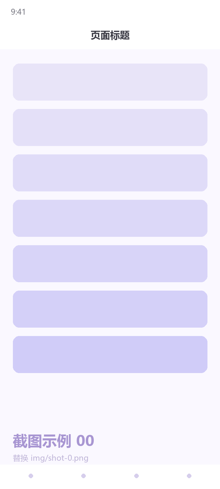
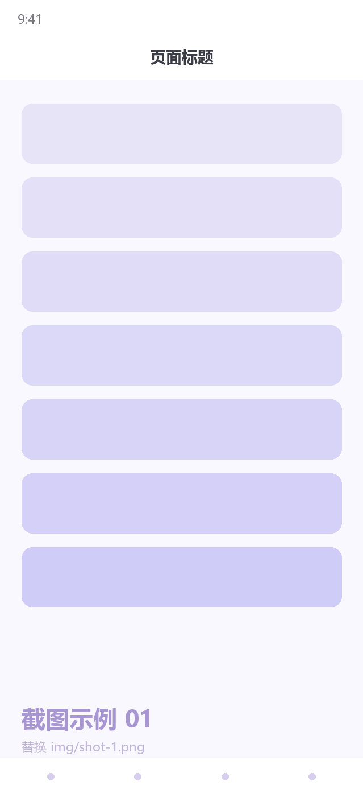

示例项目 AI 生涯规划小程序
面向大学生的 AI 生涯规划小程序。我是团队负责人，主导前端与交互，也参与接口联调与上线验收 —— 从页面到上线，跟着团队一起走完。

img/zhiyin.png
项目概述
《示例项目》是一个面向大学生的 AI 生涯规划小程序。它要解决的问题很具体： 大三、大四的学生知道自己该准备求职，却不知道自己适合什么岗位、该补什么能力。
项目依托大模型构建了十维人岗匹配引擎，把学生的专业、技能、项目经历、性格倾向等维度， 与岗位能力模型做匹配，输出可执行的建议，而不是一段「你很适合互联网行业」的空话。
要解决的问题
- 信息过载：岗位信息很多，但学生不知道哪些与自己匹配，投递全靠猜。
- 建议不可执行：常见的测评只给结论，不给「接下来三个月该学什么」的路径。
- 缺少反馈：简历写得好不好、面试答得怎么样，学生很难拿到及时的专业反馈。
解决方案
把「一次性测评」拆成一条可以反复走的闭环：测评 → 匹配 → 计划 → 诊断 → 模拟面试。
- 职业测评：多维度问答生成个人画像报告，结果结构化存储，后续功能复用。
- 人岗匹配：十维匹配算法对不同维度加权，输出带解释的匹配度，而不只是一个分数。
- 学习路线：根据差距自动生成阶段学习计划，并关联推荐学习资源。
- AI 简历诊断：简历打分 + 逐条优化建议，指出具体哪一句该改。
- AI 模拟面试：对话式面试，答完即时点评，支持多轮追问。
我的工作
- 前端开发：负责测评、画像、匹配等主要页面的实现与交互细节，处理空状态、加载与异常提示。
- 接口联调：与后端约定字段与错误码，逐条核对返回结果，把问题整理成清单推动修复。
- 团队统筹：拆分任务、跟进进度，组织赛前材料与答辩准备。
- 测试配合：上线前做功能自测与回归，记录缺陷并跟踪到关闭。
技术栈
前后端分离：小程序负责页面与交互，业务逻辑在后端接口里；我在前端这一侧对接接口、验证数据、把问题反馈回去。
成果与收获
小程序已上线可用，参加全国大学生数字媒体科技作品竞赛并完成申报，作品仍在持续迭代。
这个项目让我第一次完整体验了从需求到上线的协作：分工怎么拆、接口怎么对、问题怎么跟到关闭。 也正是在这个过程里，我发现自己更擅长也更有兴趣的是「把问题找出来」—— 所以现在转向软件测试。
界面截图

1 / 8示例项目 · 能力测评
点击大图可全屏查看，电脑上也能用 ← → 翻转